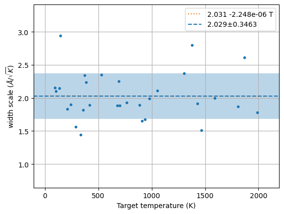
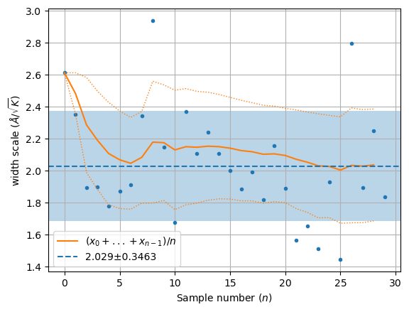

# Quick test using conventional unit cell
supercell = '1x1x1'Parallel width estimator
This implements parallel version of width-estimation routine. It runs all the calculations using a pool of nwork workers. It is using the support routines in hecss.parallel for actual execution. This should be transparent, regarding the calculator as long as these support routines support the given calculator.
# Slow more realistic test
supercell = '2x2x2'# Directory in which our project resides
base_dir = f'example/VASP_3C-SiC_calculated/{supercell}/'
calc_dir = TemporaryDirectory(dir='TMP')# Read the structure (previously calculated unit(super) cell)
# The command argument is specific to the cluster setup
calc = Vasp(label='cryst', directory=f'{base_dir}/sc/', restart=True)
# This just makes a copy of atoms object
# Do not generate supercell here - your atom ordering will be wrong!
cryst = calc.atoms.repeat(1)print('Stress tensor: ', end='')
for ss in calc.get_stress()/un.GPa:
print(f'{ss:.3f}', end=' ')
print('GPa')
Ep0 = calc.get_potential_energy()Stress tensor: 0.017 0.017 0.017 0.000 0.000 0.000 GPa# Setup the calculator - single point energy calculation
# The details will change here from case to case
# We are using run-vasp from the current directory!
calc.set(directory=f'{calc_dir.name}/sc')
calc.set(command=f'{os.getcwd()}/run-calc.sh "async"')
calc.set(nsw=0)
cryst.calc = calc# Prepare space for the results.
# We use defaultdict to automatically
# initialize the items to empty list.
samples = defaultdict(lambda : [])
# Space for amplitude correction data
xsl = []# Build the sampler
hecss = HECSS(cryst, calc,
directory=calc_dir.name,
w_search = True,
pbar=True,
)hecss.Ep0 = Ep0Triggering parallel calculations
The parallel version of the estimate_width_scale method is triggered by setting nwork parameter to number of parallel workers which should be used. If nwork=0 the number of workers will be equal to number of required samples N.
N = 10
m, s, xscl = hecss.estimate_width_scale(1, Tmax=2000)await hecss.__estimate_width_scale_aio(N//2, Tmax=2000, nwork=N//2)m, s, xscl = hecss.estimate_width_scale(N, Tmax=2000, nwork=N//2)m, s, xscl = hecss.estimate_width_scale(N//2, Tmax=2000, nwork=3)m, s, xscl = hecss.estimate_width_scale(2*N, Tmax=2000, nwork=N)m, s, xscl = hecss.estimate_width_scale(3*N, Tmax=2000, nwork=0)# plt.semilogy()
wm = np.array(hecss._eta_list).T
y = np.sqrt((3*wm[1]*un.kB)/(2*wm[2]))
plt.plot(wm[1], y, '.');
x = np.linspace(0, 1.05*wm[1].max(), 2)
fit = np.polyfit(wm[1], y, 1)
plt.plot(x, np.polyval(fit, x), ':', label=f'{fit[1]:.4g} {fit[0]:+.4g} T')
plt.axhline(m, ls='--', label=f'{m:.4g}±{s:.4g}')
plt.axhspan(m-s, m+s, alpha=0.3)
plt.ylim(m-4*s, m+4*s)
# plt.ylim(0, m+4*s)
plt.xlabel('Target temperature (K)')
plt.ylabel('width scale ($\\AA/\\sqrt{K}$)')
plt.grid()
plt.legend();
wm = np.array(hecss._eta_list).T
y = np.sqrt((3*wm[1]*un.kB)/(2*wm[2]))
plt.plot(y, '.')
rm = np.array([y[:l].mean() for l in range(1, len(y))])
rv = np.array([y[:l].std() for l in range(1, len(y))])
plt.plot(rm, '-', label='$ (x_0 + ... + x_{n-1})/n$')
plt.plot(rm + rv, ':', lw=1, color='C1')
plt.plot(rm - rv, ':', lw=1, color='C1')
plt.axhline(m, ls='--', label=f'{m:.4g}±{s:.4g}')
plt.axhspan(m-s, m+s, alpha=0.3)
plt.xlabel('Sample number ($n$)')
plt.ylabel('width scale ($\\AA/\\sqrt{K}$)')
plt.grid()
plt.legend();
Directory clean-up routine
This is executed by default to clean-up after the tests. If you want to clean up the directory after running the notebook change CLEANUP to True. The directory is always cleaned after successful tests run in command line mode. The default False value skips the cleanup for manual runs to leave calculation directory for inspection.